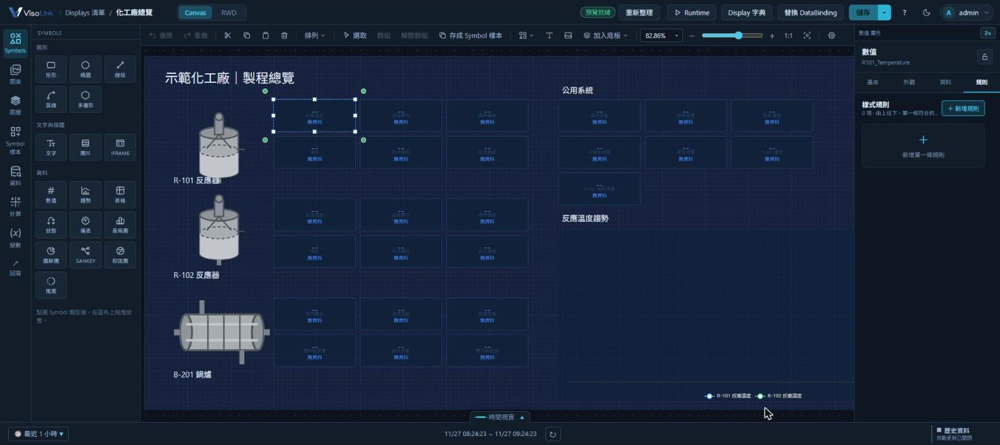
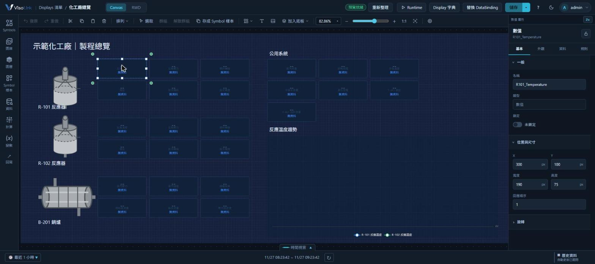
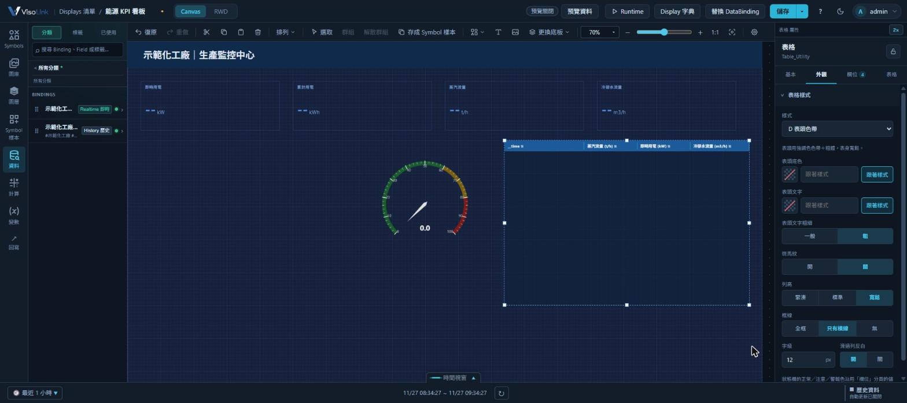
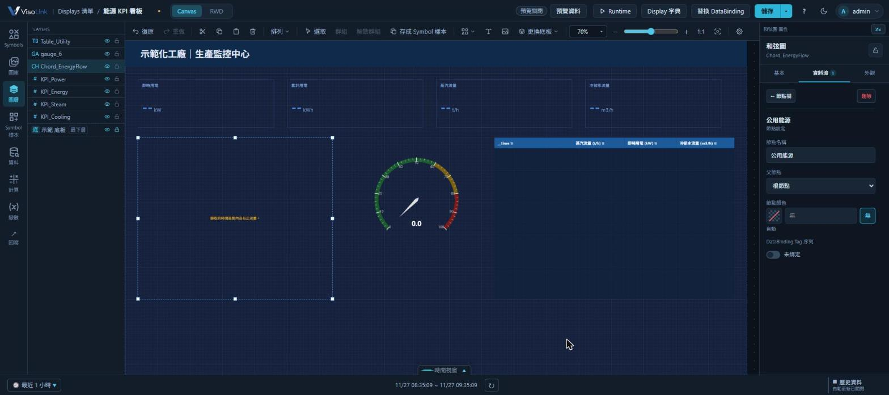
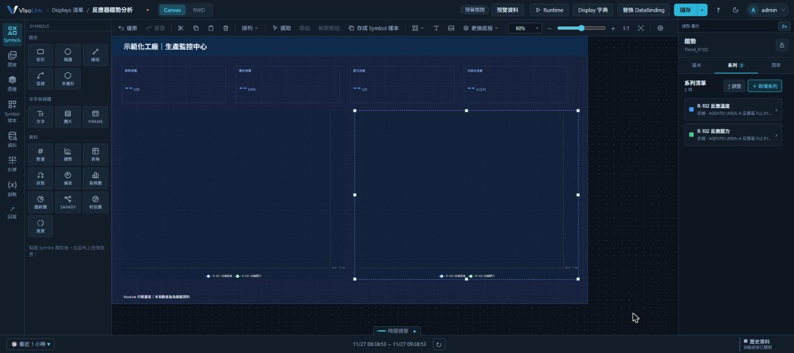
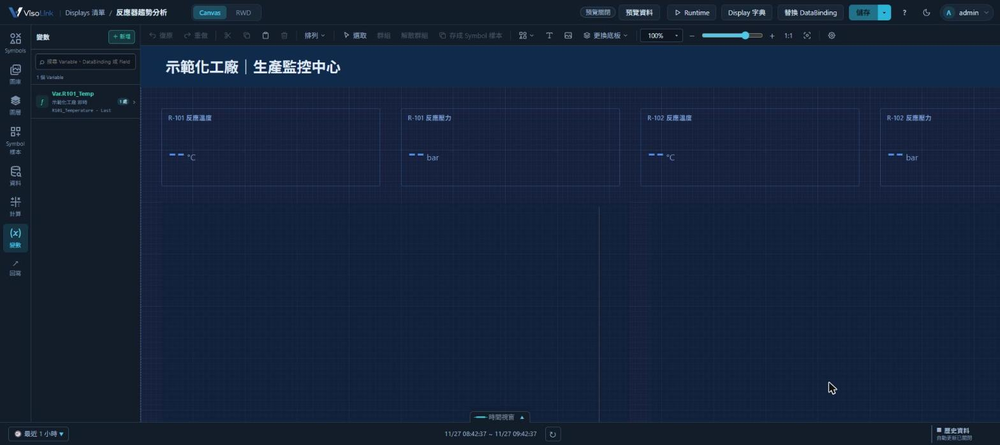
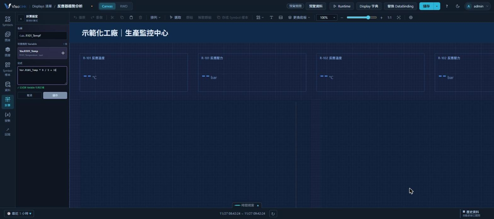
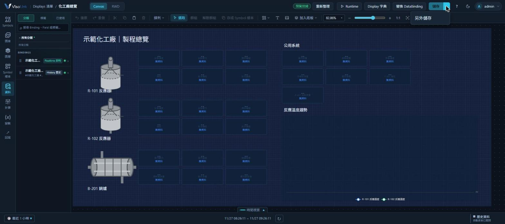
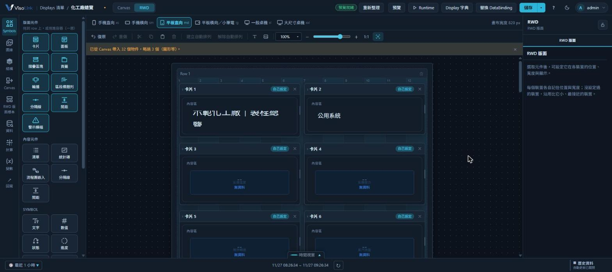
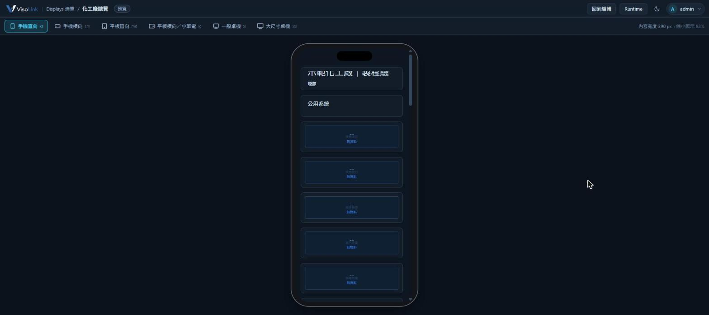

Studio 圖面編輯
Studio 用來配置畫布、加入 Symbol、綁定資料並驗證圖面；也可以另外製作手機與平板用的 RWD 版面、設定設備回寫表單。完成編輯後儲存 Display，Runtime 才會使用最新內容。本章示範畫面使用虛構的「示範化工廠」資料。
認識 Studio 介面
Studio 由上方標題列、工具列、左側功能面板、中央畫布、右側屬性面板及下方時間列組成。

| 區域 | 用途 |
|---|---|
| 標題列 | Canvas／RWD 版面切換、預覽資料、Runtime、Display 字典、替換 DataBinding、儲存（含另外儲存）與「?」說明。 |
| 工具列 | 復原、重做、剪下、複製、貼上、刪除、排列、選取、群組、解散群組、存成 Symbol 樣本、加入底板、縮放與畫布設定。 |
| 左側面板 | Symbols、圖庫、圖層、Symbol 樣本、資料、計算、變數、回寫。 |
| 中央畫布 | 放置、選取與編排物件。 |
| 右側屬性 | 依物件類型分成基本、外觀、資料、規則等分頁。 |
| 時間列 | 設定 Editor 預覽資料使用的時間範圍與時間視窗。 |
畫布設定
畫布設定控制 Display 的尺寸、背景、格線及貼齊方式。
- 先點畫布空白處取消選取，再點工具列最右側的 ⚙。
- 在「尺寸」從「尺寸預設」選擇常用尺寸，或直接輸入寬度與高度；建議收到內容大小，Runtime 縮放時比較清楚。
- 在「背景」設定顏色與透明度，或點選預設顏色。
- 在「格線」設定顯示、貼齊與大小。
- 關閉面板，用「1:1」或「符合」檢查畫布。

注意：畫布尺寸會影響 Runtime 的顯示比例；正式製作前先確認目標螢幕尺寸。手機與平板請另外製作 RWD 版面。
選取與編輯物件
物件必須先被選取，才能移動、縮放、旋轉、剪貼或刪除。
- 啟用「選取」工具後點選物件；按住 Shift 或 Ctrl 可加入或移除多選項目；在畫布空白處拖曳可框選多個物件。
- 拖曳物件本體移動位置；拖曳控制點調整尺寸。移動圖片時會自動貼合其他物件的管口與邊緣，直管可以直接拉長；旋轉時即時顯示角度。
- 需要精確位置時，在右側「基本」分頁的「位置與尺寸」輸入 X、Y、寬度與高度。
- 使用工具列的剪下、複製、貼上或刪除；也可使用 Ctrl+X、Ctrl+C、Ctrl+V、Delete。
- 方向鍵每次移動 1 px；Shift 加方向鍵每次移動 10 px。
比例控制：繪製、縮放或旋轉時按住 Shift，可使用等比例、水平／垂直或 15 度角度等限制。只是點選物件不會讓「儲存」變成可按，真的修改後才會。
排列與圖層
排列功能控制物件對齊、平均分布及前後順序；圖層面板可快速定位、隱藏或鎖定物件。
- 選取兩個以上物件，開啟「排列」。
- 選擇靠左、水平置中、靠右、靠上、垂直置中或靠下對齊；三個以上物件可水平或垂直平均分布。
- 使用置於最前、向前一層、向後一層或置於最後調整重疊順序。
- 需要一起移動時選取多個物件後點選「群組」；使用「解散群組」還原。
- 在左側「圖層」點選名稱定位物件，使用眼睛與鎖頭控制顯示及編輯。

復原與重做
使用復原與重做回到上一個編輯狀態，適合修正誤移動、誤刪除或錯誤屬性調整。
- 操作後點選「復原」或按 Ctrl+Z。
- 需要重新套用剛才復原的操作時，點選「重做」、按 Ctrl+Y 或 Ctrl+Shift+Z。
- 按鈕停用代表目前沒有可復原或重做的動作。
注意：復原與重做只處理目前編輯階段的操作，不取代正式儲存或另外儲存。
跨分頁複製貼上
在 Editor 複製的物件，可以貼到同一個瀏覽器任何 Editor 分頁（包括其他 Display）。
- 在來源 Display 選取物件，點工具列「複製」（或 Ctrl+C）。
- 切換到目標 Display 的 Editor 分頁。
- 點工具列「貼上」。
- 調整位置並檢查資料綁定。
注意：游標停在右側屬性面板的輸入框時，Ctrl+V 會貼到輸入框，請改點工具列「貼上」。跨兩套 VisoLink 貼上時圖片不會跟著過來；要完整搬移請用 Display 匯出／匯入。
加入 Symbol
Symbols 面板提供 18 種元件。先選擇類型，再於畫布拖曳出放置範圍。
- 點選左側「Symbols」。
- 選擇圖形、文字與媒體或資料類 Symbol。
- 在畫布上按住滑鼠並拖曳，放開後建立元件。
- 選取新元件，在右側完成名稱、外觀與資料設定。

| 分類 | Symbol |
|---|---|
| 圖形 | 矩形、橢圓、線段、弧線、多邊形 |
| 文字與媒體 | 文字、圖片、iFrame |
| 資料 | 數值、趨勢、表格、狀態、儀表、長條圖、圓餅圖、Sankey、和弦圖、進度 |
更換類型：Symbol 類型建立後不直接轉換。需要更換時，建立新 Symbol、重新綁定及確認結果，再刪除舊 Symbol。
Symbol 共通屬性
選取單一 Symbol 後，右側屬性面板依元件提供分頁；各類元件的屬性面板操作方式一致。

| 元件 | 屬性分頁 |
|---|---|
| 數值 | 基本、外觀、資料、規則 |
| 文字 | 基本、內容、外觀、連結 |
| 圖片 | 基本、圖片、外觀、連結 |
| 趨勢 | 基本、系列、圖表 |
| 表格 | 基本、外觀、欄位、表格 |
| 儀表 | 基本、儀表、外觀、資料、規則 |
| 和弦圖 | 基本、資料流、外觀 |
- 在畫布或圖層面板選取 Symbol。
- 於「基本」設定名稱、鎖定、位置與尺寸。
- 於「外觀」設定色彩、字型、框線或其他視覺效果；顏色欄可直接輸入色碼或選「無」。
- 於「資料」檢查 DataBinding、欄位、計算或系列設定。
- 需要依資料改變外觀時，在「規則」建立樣式規則。
預期結果：屬性調整立即反映於 Editor 畫布；儲存後才成為 Runtime 的正式內容。
資料顯示元件
資料顯示元件負責呈現單值、趨勢、明細資料及狀態。
| 元件 | 主要用途 | 主要設定 |
|---|---|---|
| 數值 | 顯示單一欄位或計算結果。 | 版面樣式、標題、單位、小數位數、空值文字、聚合、時間戳記。 |
| 趨勢 | 呈現一個或多個時間序列。 | 系列（名稱、DataBinding、欄位、Y 軸、繪製方式、顏色、線寬）、圖表。 |
| 表格 | 呈現多欄資料與時間分組。 | 欄位、表格樣式、分頁、篩選、彙整、時間分組。 |
| 狀態 | 依條件顯示文字、顏色或圖示狀態。 | 共用／各狀態資料、比對條件與樣式。 |
- 建立所需元件。
- 在「資料」或「系列」「欄位」分頁指定 DataBinding 與欄位。
- 確認欄位、系列或狀態條件。
- 開啟預覽資料確認時間與結果。
圖表與指示元件
圖表與指示元件將資料轉換為比例、分布、流程或進度。
| 元件 | 用途 |
|---|---|
| 儀表 | 以刻度、範圍及指針呈現即時數值。 |
| 長條圖 | 比較分類或時間區間中的數值。 |
| 圓餅圖 | 呈現各項目占比。 |
| Sankey | 呈現節點間的流向與量值關係。 |
| 和弦圖 | 以環狀弧帶呈現各項目之間的流量，見 和弦圖。 |
| 進度 | 依最小值、最大值及目前值顯示完成比例。 |
- 加入圖表或指示元件。
- 設定資料欄位、系列、切片或節點綁定。
- 設定範圍、標題、圖例、顏色及格式；背景與填色類欄位可用漸層，文字、邊框與線條只能純色。
- 以預覽資料確認無空值、比例錯誤或時間不一致。
數值與表格樣式
數值 Symbol 有多種資訊版面，標題、數值、單位、時間可各自設定樣式；表格 Symbol 提供 7 種表格樣式。


| 元件 | 可選樣式 |
|---|---|
| 數值 | A 標準直排、B 一行式、C 大數字 KPI 卡、D 精簡式、E 狀態色條卡、F 標題列卡 |
| 表格 | A 預設、B 斑馬紋、C 緊湊、D 表頭色帶、E 無框線極簡、F 卡片式列、G 格線式 |
- 選取數值或表格 Symbol，開啟「外觀」分頁。
- 在「樣式」選擇版面；數值可再選文字對齊（靠左／置中／靠右）。
- 依需要展開標題、值、單位、時間戳記等區塊調整字級、顏色與粗細。
- 表格可以直接在畫布上拖曳欄寬，雙擊表頭修改標題。
和弦圖（Chord）
和弦圖以環狀弧帶呈現各項目之間的流量，適合看能源、物料在各單元之間的分配。

- 在 Symbols 點「和弦圖」，於畫布拖曳放置。
- 開啟「資料流」分頁，點「新增第一個根節點」。
- 輸入節點名稱並選擇父節點；需要時再新增子節點。
- 開啟「DataBinding Tag 序列」，選擇 DataBinding、Tag／數值欄位、時間區間計算方式（例如合計）、單位與小數位數。
- 在「外觀」調整顏色與標籤；和弦節點只能純色或自動。
樣式規則
樣式規則依資料改變物件外觀，例如溫度過高時數值變紅。規則由上往下判斷，第一條符合的生效。
- 選取 Symbol，開啟「規則」分頁。
- 點「新增規則」或「新增第一條規則」。
- 選擇判斷方式並輸入條件值；判斷方式包含比較大小，以及「介於」、「包含」、「無值」等。
- 設定符合時要套用的顏色或樣式。
- 用上移／下移調整規則順序，開啟預覽資料確認效果。
瀏覽與搜尋圖形
圖庫由伺服器統一提供，所有使用者看到同一份。分類包含 PID 管道（智慧）、P&ID 常用、閥門、泵浦、儲槽、儀表、建築設施等。舊版圖庫已移除，統一使用新圖庫。
- 點選左側「圖庫」。
- 在「搜尋名稱、別名、標籤」輸入關鍵字，例如「反應」「熱交換」。
- 用「全部收合／全部展開」整理分類，或切換「縮圖／含名稱」顯示方式。
- 標示「智慧」的圖形可在畫布上改變形狀，見 智慧圖形。

要新增或整理圖形，由管理者在 Admin 圖庫管理 處理。
將圖形加入畫布
圖庫項目拖入畫布後會建立圖片物件，並依圖形內容比例設定初始範圍。
- 從圖庫找到圖形。
- 按住圖形並拖曳到畫布指定位置。
- 放開後選取新物件，調整位置與尺寸；靠近其他設備時會自動貼合管口。
- 需要依資料改變顯示時，在物件屬性設定相關規則。
預期結果：畫布新增使用圖庫內容的物件，可與其他 Symbol 一起排列與分層。
智慧圖形
智慧圖形（彎管、三通、箭頭與 PID 管道等）拖曳控制點即可改變形狀，端點會自動接上設備的管口。
- 從圖庫的「PID 管道」等分類拖曳標示「智慧」的圖形到畫布。
- 選取後拖曳黃色控制點調整長度、角度或分支位置。
- 把端點拖到設備管口附近，會自動接上。
- 在外觀設定單色或漸層顏色；多選多個智慧圖形後可以一次換色。
瀏覽與搜尋資料
資料面板以「分類、標籤、已使用」三種模式提供目前帳號有權限使用的 DataBinding 與欄位。

- 點選左側「資料」。
- 選擇「分類」依階層瀏覽、「標籤」依標籤瀏覽，或「已使用」只查看目前 Display 已引用的資料。
- 使用搜尋欄查找 Binding、欄位或標籤。
- 點 Binding 右側「›」查看欄位、資料型別、單位及目前引用次數。
即時與歷史資料標示
VisoLink 同時處理兩種資料：DataGateway 即時（只顯示現在）與歷史資料（依時間範圍查詢）。Studio 與 Runtime 都會標示資料類型，避免混用。
| 標示 | 來源 | 適合的元件 |
|---|---|---|
| Realtime 即時 | DataGateway 即時 DataBinding | 數值、狀態、儀表、進度等顯示目前值的元件；回寫表單。 |
| History 歷史 | 一般 DataBinding（資料庫、VisoLink DataGateway 歷史等） | 趨勢、表格、長條圖、和弦圖等依時間範圍彙整的元件。 |
Editor 預覽：「預覽資料」載入的是時間視窗內的歷史快照，即時資料在 Editor 預覽中顯示「無資料」屬正常；請開啟 Runtime 確認即時值。
拖曳套用資料
資料面板的拖曳動作用來把 Binding 或欄位快速套用到既有相容 Symbol，不會在空白畫布自動建立元件。
- 先在畫布建立數值、趨勢、表格、狀態、儀表、長條圖、圓餅圖或進度等相容元件。
- 在資料面板找到 Binding 或欄位。
- 按住拖曳控制符號「⠿」，拖到目標 Symbol 上。
- 目標顯示可接受提示後放開。
- 在右側資料屬性確認自動加入的欄位、系列或欄位清單。
相容性：圖片、文字、iFrame 與 Sankey 不接受一般 Binding／欄位快速套用；Calculation 只接受數值、圖形、儀表、狀態與進度。
Symbol 資料綁定
資料綁定決定 Symbol 從哪一個 DataBinding 讀取哪些欄位，並依元件類型形成單值、欄位、系列或切片。


- 選取 Symbol，開啟右側「資料」（趨勢為「系列」、表格為「欄位」）。
- 模式選「DataBinding」（或「計算」），選擇 DataBinding 與欄位。未選欄位時提示「還沒選欄位，Runtime 會顯示空值文字」。
- 多序列元件點「＋新增系列」「新增欄位」逐一設定，可用「調整」排序。
- 確認時間欄位及各資料來源的時間關係。
- 開啟預覽資料或 Runtime 檢查結果。
找不到資料：先確認後台資料權限、DataBinding 是否啟用、欄位是否仍存在，以及目前帳號是否可使用；也可請管理者用 有效權限預覽 確認。
格式、單位與空值
資料顯示不只取決於綁定，還需要依元件設定聚合、單位、小數位及無資料狀態。
- 選取資料 Symbol。
- 設定標題與單位；數值、儀表等元件可沿用欄位的單位。
- 設定小數位數及必要的數值格式。
- 依用途選擇最新值、最早值、平均值、中位數、最大值或最小值等聚合。
- 設定空值文字，例如「--」或「無資料」；需要時開啟「顯示時間戳記」。
- 以有資料及無資料情境分別預覽。
預期結果：資料以一致格式呈現，無資料時不會被誤認為零值。
替換 DataBinding
一次更換整張 Display 使用的 DataBinding；用到它的圖元、樣式規則、圖表、變數、計算與回寫欄位會一起換好。適合複製畫面到另一條產線，或匯入後補上未設定的資料。

- 點標題列「替換 DataBinding」。
- 逐列查看狀態與引用位置；只想處理缺漏時勾「只看未設定」。
- 在「替換為」選擇新的 DataBinding；保持「— 不替換 —」代表不變。
- 檢查下方「未設定的回寫目標」；回寫目標未設定的表單在 Runtime 顯示「回寫目標未設定」，不能送出。
- 確認「待替換 N 筆」後點「套用」，再儲存 Display。
Variable
Variable 將 DataBinding 欄位與聚合結果命名為可重複使用的圖面變數，運算資料範圍由目前的時間視窗決定。

- 點選左側「變數」。
- 點選「＋新增」，輸入名稱（只能使用文字、數字或底線，且不能以數字開頭）。
- 點「選擇 DataBinding」，選擇 Binding 後在「Field」清單點選欄位。
- 選擇函式：Last（最後一筆有效值）、First、Min、Max、Avg 或 Sum。
- 確認下方預覽（例如
Last(DataBinding.Field)）後點「儲存」。
命名：使用可辨識的業務名稱；變更或刪除前先查看引用次數，避免 Calculation 失效。
Calculation
Calculation 使用 Variable、常數、運算子與函數形成衍生值，並可套用到相容 Symbol。

- 點選左側「計算」。
- 點選「＋新增」，輸入名稱。
- 在公式中引用已建立的 Variable，例如
Var.R101_Temp * 9 / 5 + 32。 - 確認公式驗證成功後儲存。
- 在數值等 Symbol 的「資料」分頁把模式選「計算」並選擇這個 Calculation，或拖曳到數值、圖形、儀表、狀態或進度。
- 開啟預覽，確認所有 Variable 已取得資料且結果合理。
異常訊息：若顯示 Variable 尚未就緒或 Calculation 不存在，先檢查名稱、引用關係、來源資料與時間範圍。
儲存圖面
Display 名稱旁的圓點表示有尚未儲存的變更；儲存完成後，Runtime 才會使用最新圖面設定。

- 完成編輯後先以預覽資料檢查內容。
- 點選「儲存」更新目前 Display。
- 需要保留原版本時，點「儲存」右側「▾」並選擇「另外儲存」。
- 確認名稱旁的未儲存圓點消失。
注意：離開 Studio 前先確認是否仍有尚未儲存提示；「另外儲存」會建立另一個 Display。
預覽圖面
「預覽資料」在 Editor 中載入目前時間視窗的一筆資料快照，用於確認綁定、格式、規則與計算結果。
- 在下方時間列選擇預覽範圍。
- 點選「預覽資料」，等待標題列顯示「預覽就緒」。
- 逐一確認數值、圖表、狀態、空值及 Calculation；需要更新時點「重新整理」。
- 需要完整互動、即時值與持續監看時，點選「Runtime」。
預期結果：畫布顯示所選時間情境的資料結果；問題可在儲存前被發現。
Symbol 樣本
選取一組物件即可存成 Symbol 樣本，在其他 Display 重複使用。放入時可以「複製」成一般物件，或選擇「繼承」：樣本修改後，所有使用的地方一起更新，各自的資料與文字保留。


存成樣本
- 在畫布框選或多選要重複使用的物件，例如一組反應器圖示與數值。
- 點工具列「存成 Symbol 樣本」。
- 輸入「Symbol 樣本名稱」，選擇資料夾。
- 點「存成 Symbol 樣本」，完成訊息顯示存到哪個資料夾。
放入樣本
- 點左側「Symbol 樣本」，搜尋樣本。
- 把樣本拖到畫布上，或在樣本上按兩下。
- 在「放入 Symbol 樣本」視窗選「繼承」或「複製」，點「放入」。
- 選取放入的物件，逐一指定每個資料位置的 DataBinding。
樣本尺寸＝選取物件的外框；Symbol 樣本沒有頁面尺寸與背景，每次存檔自動重算。集中管理樣本請到 Symbol 樣本頁。
Display 底板
Logo、標題、頁尾等固定框架可以做成底板，讓多張 Display 共用；修改底板後，所有使用的頁面一起更新。


- 製作底板：建立一張 Display，放上標題列、Logo、頁尾等固定內容並儲存；在 Display 設定勾選「可作為底板」。
- 在要套用的 Display 點工具列「加入底板」，選擇底板。
- 底板出現在圖層最下方（標示「最下層」並鎖定），工具列按鈕變成「更換底板」。
- 需要換成其他底板時點「更換底板」。
- 儲存 Display。
要一次替多張 Display 加入或更換底板，請用圖面庫的 批次加入與變更底板。修改底板內容請開啟底板本身的 Display 編輯。
RWD 版面編輯
同一張 Display 可以另外製作 RWD 版面，手機與平板開啟時自動改用 RWD 版面顯示。RWD 編輯器提供面板、卡片、摺疊、頁籤等版面元件，內容可選擇上下排列、格子排列或彈性排列。

- 在 Studio 標題列點「RWD」。
- 空白版面可選「從範例開始」、「從 Canvas 帶入」（沿用 Canvas 上的物件，部分圖形等會略過並提示數量），或「＋新增 row」自行排版。
- 從左側把卡片、面板、摺疊區塊、頁籤、輪播、區段標題列、分隔線、間距、警示橫幅等版面元件拖到 row 上；內容元件（清單、統計磚、流程圖嵌入）與 Symbol 拖進容器。
- 選取元件後在右側設定它在各裝置的位置、寬度（佔幾格）與顯示；每個裝置各自記住設定，沒設定過的裝置沿用比它小且最接近的裝置。
- 多個元件可用「建立自動排列」統一排列，「解除自動排列」還原。
- 常用的版面元件可存成「RWD 版面樣本」，從左側「RWD 版面樣本」拖出重複使用。
- 點「儲存」。清單卡片會出現「RWD」標記。
RWD 預覽

- 在 RWD 編輯器點標題列「預覽」。
- 上方切換手機、平板、桌機等裝置，檢查排版與文字是否被截斷。
- 點「回到編輯」修正，或點「Runtime」開啟實際畫面。
Runtime 中手機與平板自動使用 RWD 版面；桌機可用 Runtime 上方的「Canvas／RWD」切換，見 手機與平板 RWD 顯示。
回寫表單設定
回寫表單讓操作人員在 Runtime 把設定值送回設備（OPC UA、Modbus TCP）。表單沿用 Binding 的使用與寫入權限，設定隨 Display 保存；在 Studio 設定時不會送出任何設備命令。

- 在 Studio 左側點「回寫」，開啟「回寫表單設定」。
- 點「＋」新增表單，輸入表單名稱並選擇「所屬 DG」（一張表單對應一套 DG；變更 DG 前請先移除欄位）。
- 點「＋ 新增欄位」，在右側設定顯示名稱、DataBinding 與 Tag；Tag 只列出同時可使用、可寫入且 DG 允許的欄位。
- 選擇輸入模式：Bool 為單選，數值為數字輸入；最小值、最大值與單位會自動帶入寫入安全規則，可再設定步進。
- 在「欄位排版」拖曳調整順序與寬度，切換 xs～xxl 檢查不同螢幕；可點「預覽彈窗」查看效果。
- 點「儲存至 Display」（顯示「表單設定已保存於 Display。」），回到 Editor 再儲存 Display。
權限：寫入權限預設拒絕，請在 Admin 即時 DataBinding 授予。Runtime 送出流程見 設備回寫表單。